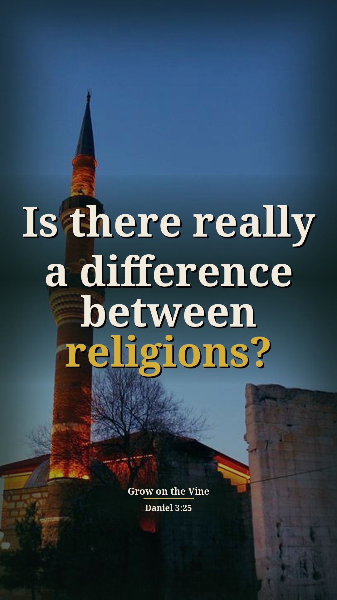
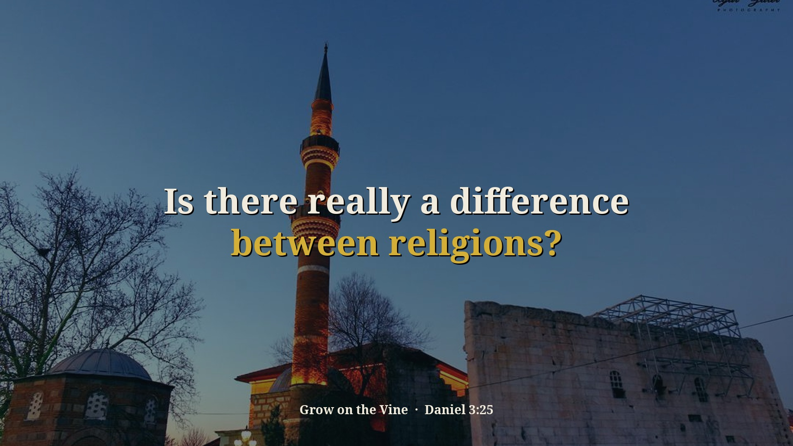
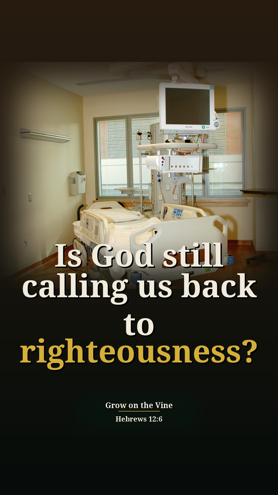
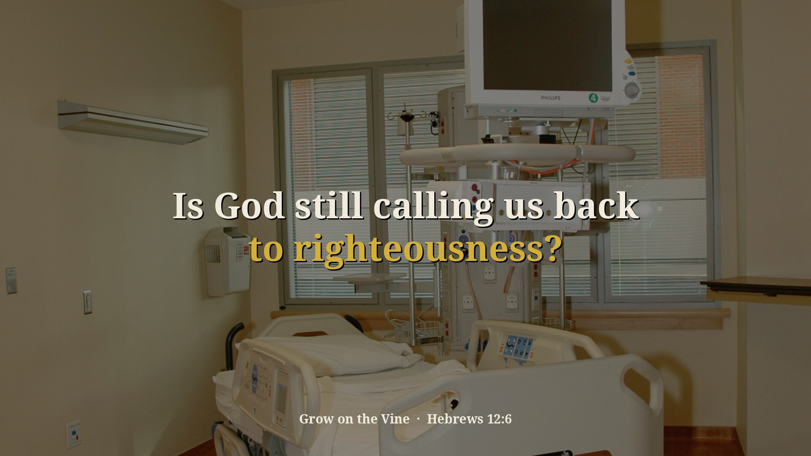
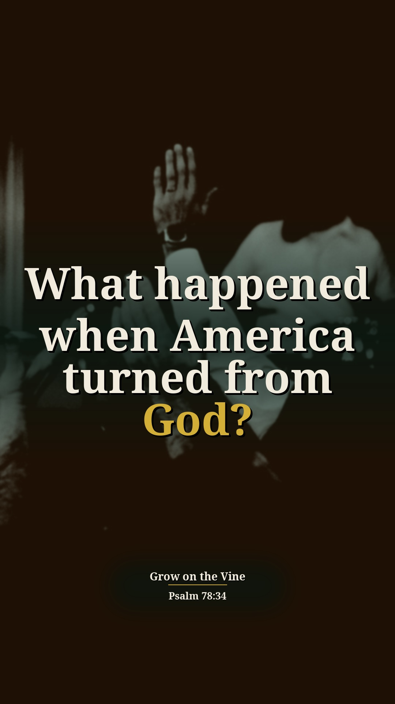
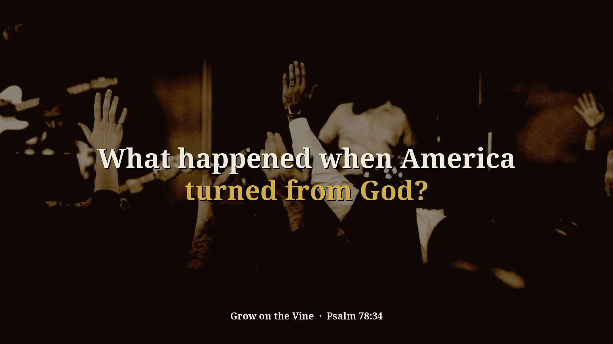
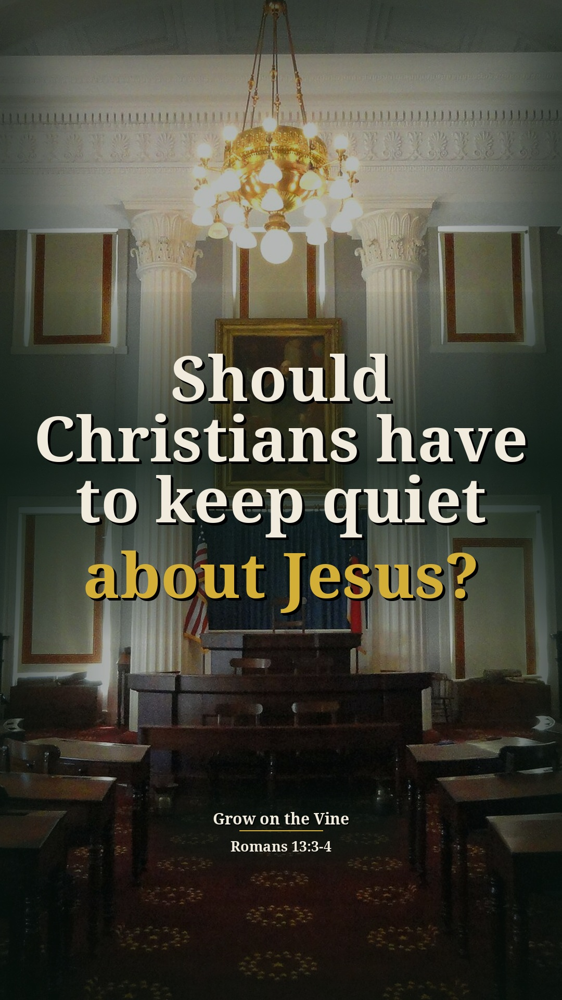
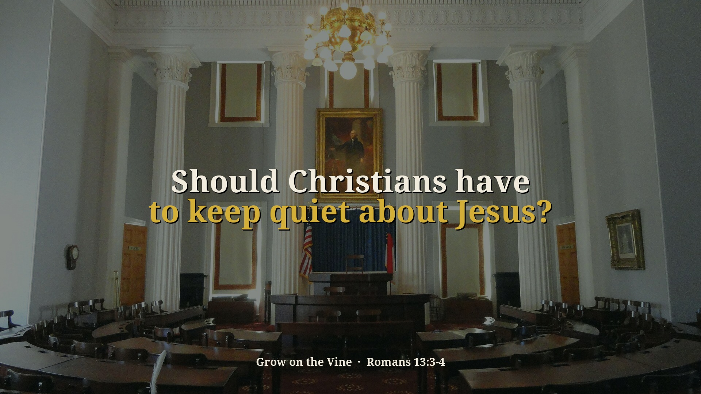

Civil Disobedience Part 2 (Daniel 3) — 4 new context Shorts (preview)
Preview only, not posted anywhere. Source: zI1DI8B_gYc · Pastor David G. Kincer. New Shorts from passages on sin and other religions that were skipped before. Each one includes the earlier or surrounding part of the sermon that explains why he says it. Each card follows the clip-page order: video → short answer → his words → Scripture (NKJV) → full message.
Is there really a difference between religions?
Context included: 0:00–0:34 the civil law changed and God revealed Himself to a pagan nation (Daniel 3), so "they know without a doubt there is a difference." It ends on the fourth man in the fire, which is how God showed the difference.
Watch the clip
Our short summary of this clip, not the preacher's exact words
Short answer: Yes. He says when God revealed Himself in Daniel 3, the pagan nation knew without a doubt there is a difference between Hindu, Buddha, animism and Jesus Christ. The God he serves rules the nation and the government and is head of the church, or else He's worthless.
Why: Daniel 3:25, 29: the king saw a fourth man in the fire and declared no other God can deliver like this.
“As we know this Sunday school story, the civil law has changed and God reveals himself to a pagan nation.”
▶ 0:00
“They know without a doubt there is a difference between Hindu, Buddhas, Animus and Jesus Christ.”
▶ 0:35
“I don't know what God your servants serve, but the God I serve, he rules the nation.”
▶ 0:54
“I threw three in and there's four people in there walking in the midst of the fire.”
▶ 1:17
Daniel 3:25 “Look!” he answered, “I see four men loose, walking in the midst of the fire; and they are not hurt, and the form of the fourth is like the Son of God.”
Daniel 3:29 Therefore I make a decree that any people, nation, or language which speaks anything amiss against the God of Shadrach, Meshach, and Abed-Nego shall be cut in pieces, and their houses shall be made an ash heap; because there is no other God who can deliver like this.”
Full sermon: Civil Disobedience Part 2 (Daniel 3) — full message page


Other title options:
- Will God reveal Himself to this world?
- Who rules the nation?
YouTube description (draft)
Is there really a difference between religions? Read the short answer, the Scripture (NKJV) and the pastor's own words: https://growonthevine.com/clips/is-there-a-difference-between-religions/ To see the full message, click here: https://www.youtube.com/watch?v=zI1DI8B_gYc&t=0s Yes. He says when God revealed Himself in Daniel 3, the pagan nation knew without a doubt there is a difference between Hindu, Buddha, animism and Jesus Christ. The God he serves rules the nation and the government and is head of the church, or else He's worthless. Daniel 3:25 (NKJV) Pastor David G. Kincer · Grow on the Vine Music: "Inspired" Kevin MacLeod (incompetech.com) Licensed under Creative Commons: By Attribution 4.0 License http://creativecommons.org/licenses/by/4.0/ #Shorts #Bible #Jesus
Is God still calling us back to righteousness?
Context included: 10:55–11:11 "if you don't heed the call, there's going to be a disciplinary action": God bringing people back to righteousness is the frame for the list of diseases, AIDS and STDs.
Watch the clip
Our short summary of this clip, not the preacher's exact words
Short answer: He says we've forgotten God was involved in bringing people to righteousness, and if you don't heed the call there's disciplinary action. Smallpox, cholera, the flu, then AIDS killed millions, and STDs went from three before 1960 to 40, several incurable, because people are permissive and do what they want.
Why: Hebrews 12:6: whom the Lord loves He chastens.
“We've forgotten that God was involved before bringing people to righteousness.”
▶ 10:55
“See, if you don't heed the call, there's going to be a disciplinary action.”
▶ 11:03
“AIDS have killed millions worldwide in our generation and over half a million in America.”
▶ 11:34
“Now we have 40 different sexually transmitted diseases, and several of them are incurable.”
▶ 11:56
“Because they're very permissive. They just do what they want.”
▶ 12:17
Hebrews 12:6 For whom the LORD loves He chastens, And scourges every son whom He receives.”
Full sermon: Civil Disobedience Part 2 (Daniel 3) — full message page


Other title options:
- Why have we forgotten the plagues?
- What is the price of a permissive life?
YouTube description (draft)
Is God still calling us back to righteousness? Read the short answer, the Scripture (NKJV) and the pastor's own words: https://growonthevine.com/clips/does-sin-bring-sickness-on-a-nation/ To see the full message, click here: https://www.youtube.com/watch?v=zI1DI8B_gYc&t=654s He says we've forgotten God was involved in bringing people to righteousness, and if you don't heed the call there's disciplinary action. Smallpox, cholera, the flu, then AIDS killed millions, and STDs went from three before 1960 to 40, several incurable, because people are permissive and do what they want. Hebrews 12:6 (NKJV) Pastor David G. Kincer · Grow on the Vine Music: "Morning" Kevin MacLeod (incompetech.com) Licensed under Creative Commons: By Attribution 4.0 License http://creativecommons.org/licenses/by/4.0/ #Shorts #Bible #Jesus
What happened when America turned from God?
Context included: Starts at the 1970s "if it feels good, do it" and the Jesus people awakening (17:09–17:40), the backdrop for laws changing on homosexuality and abortion. It ends at Psalm 78:34 (18:39), the verse that explains it.
Watch the clip
Our short summary of this clip, not the preacher's exact words
Short answer: He says in the 70s it was "if it feels good, do it," and while God moved in awakenings, laws changed on homosexuals and abortion, Jesus wasn't accepted in public and prayer was taken out, and we've declined since. After 9/11 the churches filled; as the Psalm says, when He slew them, then they sought Him.
Why: Psalm 78:34: when He slew them, then they sought Him.
“And if it feels good, do it.”
▶ 17:19
“all these laws started changing homosexuals and abortion and all this stuff and Jesus not accepted in public places and prayer taken out”
▶ 17:49
“We've been in a spiritual downturn most of Christians in America for two or three decades and it hasn't bothered them at all.”
▶ 18:16
“When I slew them, then they trusted me.”
▶ 18:39
Psalm 78:34 When He slew them, then they sought Him; And they returned and sought earnestly for God.
Full sermon: Civil Disobedience Part 2 (Daniel 3) — full message page


Other title options:
- Will it take a tragedy to turn us back?
- Why were churches full after 9/11?
YouTube description (draft)
What happened when America turned from God? Read the short answer, the Scripture (NKJV) and the pastor's own words: https://growonthevine.com/clips/what-happened-when-america-changed-its-laws/ To see the full message, click here: https://www.youtube.com/watch?v=zI1DI8B_gYc&t=1029s He says in the 70s it was "if it feels good, do it," and while God moved in awakenings, laws changed on homosexuals and abortion, Jesus wasn't accepted in public and prayer was taken out, and we've declined since. After 9/11 the churches filled; as the Psalm says, when He slew them, then they sought Him. Psalm 78:34 (NKJV) Pastor David G. Kincer · Grow on the Vine Music: "Clean Soul" Kevin MacLeod (incompetech.com) Licensed under Creative Commons: By Attribution 4.0 License http://creativecommons.org/licenses/by/4.0/ #Shorts #Bible #Jesus
Should Christians have to keep quiet about Jesus?
Context included: 24:38–25:20 Romans 13:3–4, the purpose of civil government is to punish evil and praise those who do right. That is the standard he holds up against Christians being told to be quiet while Islam is spoken of flatteringly.
Watch the clip
Our short summary of this clip, not the preacher's exact words
Short answer: He says Romans 13 says government is to punish those who hurt others and praise those who live right, but in America Christians are told to shut up about Jesus and the Bible and prayer are out of schools, while Muslims and Allah are talked about in a flattering way so we don't make Muslims mad.
Why: Romans 13:3–4: rulers are God's ministers to praise good and punish evil.
“Rulers are not a terror to good works but to the evil.”
▶ 24:50
“We're telling the Christians to shut up about Jesus. That's not right.”
▶ 25:19
“They will talk about Muslim and Allah all the time in a real flattering way.”
▶ 25:33
Romans 13:3-4 For rulers are not a terror to good works, but to evil. Do you want to be unafraid of the authority? Do what is good, and you will have praise from the same. For he is God’s minister to you for good. But if you do evil, be afraid; for he does not bear the sword in vain; for he is God’s minister, an avenger to execute wrath on him who practices evil.
Full sermon: Civil Disobedience Part 2 (Daniel 3) — full message page


Other title options:
- What is government for?
- Why can't we pray in public?
YouTube description (draft)
Should Christians have to keep quiet about Jesus? Read the short answer, the Scripture (NKJV) and the pastor's own words: https://growonthevine.com/clips/should-christians-have-to-hush-about-jesus/ To see the full message, click here: https://www.youtube.com/watch?v=zI1DI8B_gYc&t=1478s He says Romans 13 says government is to punish those who hurt others and praise those who live right, but in America Christians are told to shut up about Jesus and the Bible and prayer are out of schools, while Muslims and Allah are talked about in a flattering way so we don't make Muslims mad. Romans 13:3-4 (NKJV) Pastor David G. Kincer · Grow on the Vine Music: "Crinoline Dreams" Kevin MacLeod (incompetech.com) Licensed under Creative Commons: By Attribution 4.0 License http://creativecommons.org/licenses/by/4.0/ #Shorts #Bible #Jesus